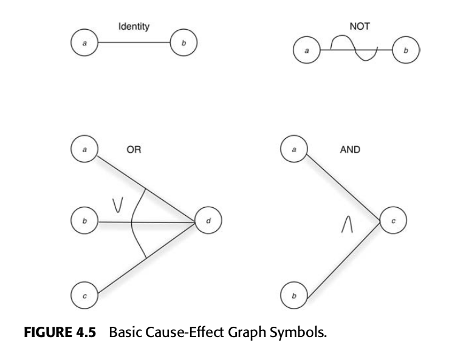
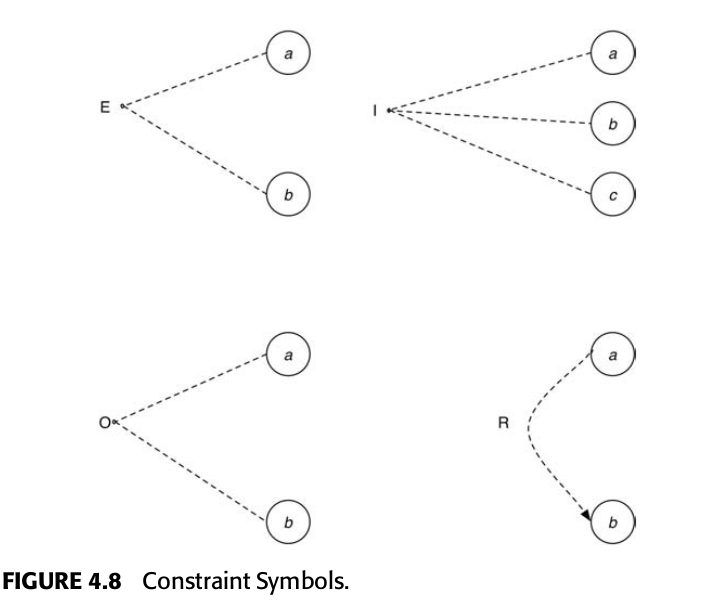
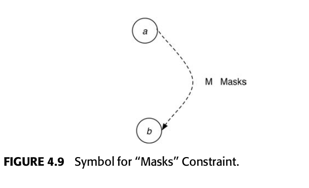

Técnicas de Teste Caixa-Preta
Test-Case Design
Uma vez que a a testagem não garante a ausência completa de erros, a estratégia que deve ser adotada ao elaborar casos de teste é determinar qual conjunto de casos de testes tem melhores probabilidades de encontrar a maior quantidade de erros.
Em geral, a metodologia mais ineficiente é o teste com valores aleatórios, pois possui a menor probabilidade de encontrar erros. Uma boa escolha de casos de teste usa conceitos de testes caixa-branca e caixa-preta.
Testes Caixa-Preta
Testes caixa-preta são derivados a partir das especificações de um programa, e têm como objetivo identificar áreas nas quais o programa não se comporta como especificado.
Partições Equivalentes
Já que a testagem exaustiva não é possível, o testador deve selecionar um subconjunto de entradas possíveis para testar um programa, com uma altas probabilidades de encontrar a maior quantidade de erros.
Uma ideia razoável é particionar o conjunto infinito de entradas possíveis em subconjuntos representantes de uma parcela, seguindo duas propriedades:
- Um caso de teste reduz, em mais do que um, o número de outros casos de teste que devem ser elaborados para atingir algum objetivo pré definido de testagem.
- Um caso de teste cobra um grande conjunto de outros casos de teste possíveis, ou seja, ele informa sobre a presença ou ausência de erros sobre um conjunto de valores de entrada.
Essas duas considerações compõem a técnica caixa-preta de testagem denominada partição em equivalentes, por meio da seguinte metodologia:
- Selecionar condições para testagem utilizando a segunda propriedade, gerando classes equivalentes.
- Determinar o menor número possível de entradas para casos de teste cobrindo essas condições, utilizando a primeira propriedade, definindo casos de teste.
Identificando as Classes Equivalentes
São identificadas tomando-se uma condição de entrada e particionando-a em dois ou mais grupos, dentre eles "equivalências válidas" e "equivalências inválidas".
Diretrizes para identificar classes equivalentes:
- Se uma condição de entrada especifica um intervalo de entrada (1 < x < 50), identifique uma classe equivalente válida (e. g. x = 45) e duas inválidas (e. g. x < 1 e x > 50).
- Se uma condição de entrada especifica uma quantidade de valores (e. g. "Um aluno pode matricular-se de 1 até 8 matérias por semestre"), identifique uma classe válida e duas inválidas (nenhuma matéria ou mais do que 9 matérias).
- Se uma condição de entrada especifica um conjunto de valores válidos (e. g. tipo de documento: CPF, RG e PASSAPORTE), provavelmente o tratamento de cada uma delas é diferente, identifique uma classe válida para cada elemento desse conjunto e uma classe inválida (e. g. CDI).
- Se uma condição de entrada define uma situação obrigatória, como "o primeiro caractere do identificador deve ser uma letra", identifique uma classe válida (satisfazendo a condição) e uma inválida (não satisfazendo a condição).
Identificando os Casos de Teste
Depois de identificar as classes de equivalência, os casos de teste são identificados, a partir delas, pelo seguinte processo:
- Determine um valor único para cada classe de equivalência.
- Escreva novos casos de teste cobrindo o máximo de classes válidas não cobertas, até que todas as classes válidas sejam cobertas.
- Escreva um caso de testes para cobrir uma, e apenas uma, das classes inválidas não cobertas, até que todas sejam cobertas.
A ideia de escrever testes únicos para as classes inválidas é evitar que os resultados dos testes sejam mascarados por outros casos de testes.
Boundary Value Analysis
Valores de fronteira (ou borda) são aqueles diretamente acima ou abaixo das fronteiras dos valores de entrada e saída das classes de equivalência. A análise dos valores de borda se distingue das partições equivalentes nos seguintes aspectos:
- Ao invés de escolher-se qualquer elemento em uma classe de equivalência como representativo, a análise dos valores de fronteira requer que um ou mais elementos sejam selecionados de forma que cada ponta da classe de equivalência seja testada.
- Testes são derivados tanto das condições de entrada como das saídas possíveis (espaço de resultados).
Algumas diretrizes para elaboração desses testes são:
- Se uma condição de entrada especifica um intervalo de entrada (1 < x < 50), escreva casos de teste para as pontas do intervalo e casos de entrada inválidos para valores logo acima (ou abaixo) das fronteiras (e. g. x = 0, 1, 50 e 51).
- Se uma condição de entrada especifica uma quantidade de valores (e. g. "Um aluno pode matricular-se de 1 até 8 matérias por semestre"), escreva testes para valores de entrada logo acima (ou abaixo) dos valores (e. g. 0, 1, 8 e 9 matérias).
- Use a diretriz 1. para os valores de saída (e. g. Se um programa calcula valores juros resultando entre R$0,00 e R$150.000,00, escreva casos de teste para gerarem as saídas -0,01, 0, 150 mil e 150.000,01).
- Aplique a diretriz 2. para os valores de saída (e. g. Se um programa exibe uma lista dos últimos 5 documentos baixados, insira 0, 1, 2, 3, 4, 5 e 6para testar a exibição).
- Se a entrada ou saída de um programa é ordenado, destine atenção aos primeiro e último elementos do conjunto.
Cause-effect graphing
Um grafo de causa-efeito é uma maneira de traduzir em linguagem formal a linguagem natural da especificação. O grafo é, na verdade, um circuito lógico digital com uma notação simplificada.
Para derivar os casos de teste, é necessário seguir os seguintes passos:
- Dividir a especificação em partes trabalháveis.
- Identificar as causas e efeitos na especificação, uma causa é uma condição distinta de entrada ou uma classe de equivalência de entradas, e um efeito é uma condição de saída ou uma transformação de sistema. Cada causa e efeito é identificada com um único número.
- A semântica da especificação é transformada em um grafo "booleano" ligando as causas e efeitos.
- O grafo é anotado com restrições descrevendo as combinações de causas e ou efeitos que são impossíveis por motivos de sintaxe ou restrições de ambiente.
- Fazendo o rastro de cada condição no grafo, uma tabela de decisões de entrada é criada. Cada coluna representa um caso de teste.
A notação utilizada no diagrama está representada na figura 1.

Funções utilizadas:
- Identidade:
b = (a==1) ? 1 : 0; - Not:
b = (a==1) ? 0 : 1; - Or:
d = (a==1 || b==1 || c==1) ? 1 : 0; - And:
c = (a==1 && b==1) ? 1 : 0;
0 e 1 denotam o estado ausente e presente para as causas e efeitos.
Para ilustrar as restrições entre as causas, utiliza-se a notação representada na figura 2.

Restrições entre causas:
- E: ou exclusivo (XOR), ou a, ou b, mas não ambos.
- I: ao menos um deve ser 1.
- O: apenas um pode ser 1.
- R: para que
a==1, b deve ser 1.
Também há a restrição Mask entre efeitos (figura 3)

Restrição entre efeitos
- M: Se
a==1, entãob==0.
Higher-Order Testing
O processo de desenvolvimento de software perpassa várias etapas, e falhas na comunicação entre essas etapas pode gerar erros. Além disso, durante as etapas são elaborados artefatos de documentação:
- Requisitos, que especificam porquê o programa é desejado.
- Objetivos, que especificam o que o programa deve fazer e quão bem isso deve ser feito.
- Especificações externas, que definem a representação exata do programa para os usuários.
- Documentação associada com os processos seguintes, com maiores níveis de detalhe, que especifica como o programa é construído.
Para evitar erros no tratamento de informações entre as etapas de desenvolvimento, é possível seguir três diretrizes:
- Introdução de mais precisão no processo de desenvolvimento;
- Introdução de verificação no final de cada processo;
- Utilizar processos distintos de testes para cada processo de desenvolvimento.
![Relação entre os níveis de teste e as etapas do processo de desenvolvimento.(Fonte: [1])](../imgs/processos-e-testes.png)
O objetivo dos testes:
- de módulo é encontrar discrepâncias entre os módulos dos programas e as especificações de suas interfaces.
- de função é mostrar que um sistema não está de acordo com a sua especificação externa.
- de sistema é mostrar que o produto é inconsistente com os objetivos originais.
Testes de Função
São atividades de teste caixa-preta que visam encontrar discrepâncias entre um sistema e sua especificação externa, do ponto de vista do usuário final. Para realizar esse tipo de teste é possível utilizar as técnicas de teste caixa-preta mencionadas anteriormente, como, por exemplo, particionamento em equivalentes ou análise dos valores de borda.
Referências
[1] MYERS, G., et al. The Art of Software Testing. ProQuest Ebook Central, disponível no link.